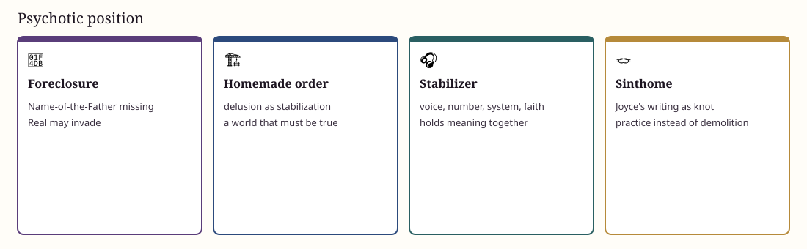

⚡ Foreclosure · homemade Symbolic
⚡ The psychotic subject
Not more neurosis: a different 🪢 knot. What neurosis represses, psychosis may meet as invasion.
A private order (delusion, system) is already an attempt to stabilize the Real. Late Lacan reads Joyce’s writing as a sinthome. Help find a knot — music, craft, rhythm — rather than only tearing the private order down.
